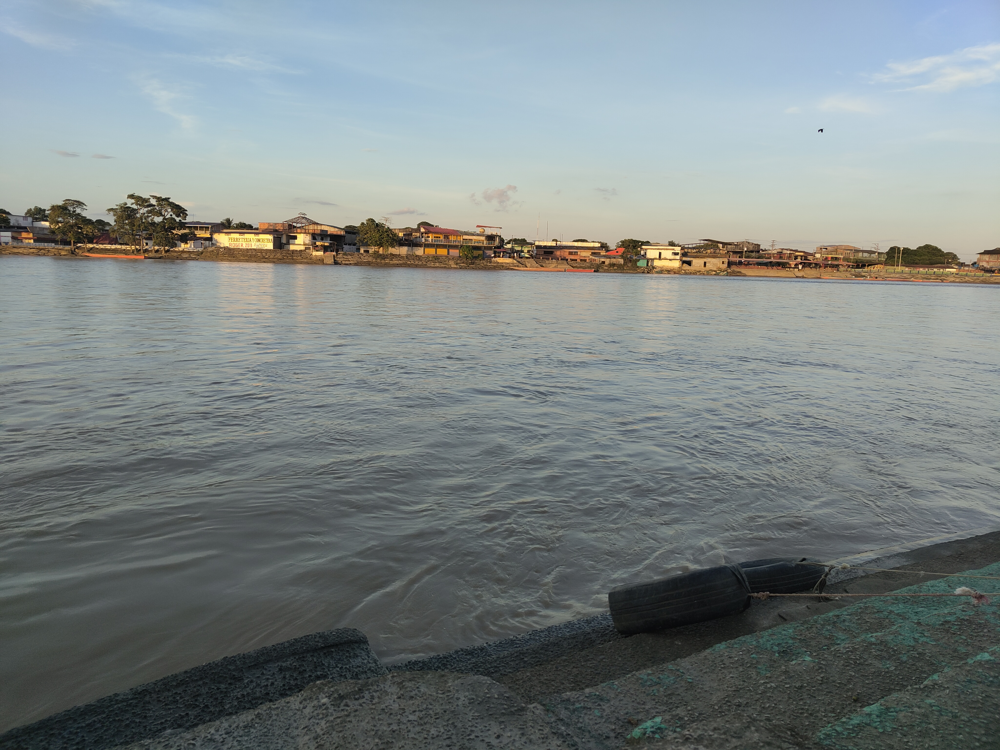
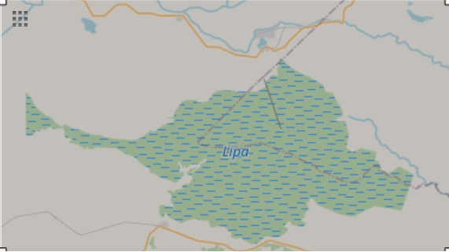

Willkommen auf meinem neuen Blog! Hier werde ich über meine Forschung zur politischen Ökologie der Wasserkraft und des Öl-Extraktivismus in Kolumbien schreiben.
Erste Annäherungen an Arauca
09.01.2025
Über zwei Monate sind schon vergangen seitdem ich mit meinem Praktikum in Kolumbien begonnen habe. Ich hatte nicht vor einen Blog zu schreiben, habe aber im Laufe der Zeit gemerkt, dass ich das Bedürfnis habe meine Erkenntnisse und Gedanken zu teilen. Und auch wenn diesen Blog niemand ist, so ist Schreiben immer auch Denken und es hilft mir meine Gedanken zu sortieren und die Geschichten, die mir erzählt wurden zu dokumentieren - natürlich anonymisiert.
Die Ausgangslage
Im November 2024 habe ich ein dreimontiges Praktikum am Centro Interdisciplinario sobre Estudios de Desarollo (CIDER) bei Maria Cecilia Roa Garcia begonnen. Sie arbeitet momentan mit zwei Co-Autorinnen an einem Buchzum Verhältnis vom kolumbianischen Staat zu den Flüßen. Das Buch soll 2026 veröffentlicht werden und ich arbeite an einem der Kapitel mit - dem Kapitel zum Fall des Rio Arauca und des hydrologischen Systems Lipa.
Arauca ist eine Provinz an der Grenze zu Venezuela. Die Hauptstadt heißt passenderweise auch Arauca und nur ein Fluß - der Rio Arauca - trennt Kolumbien hier von Venezuela.

Auf der anderen Seite des Rio Arauca ist Venezuela. Es herrscht normalerweise reger Bootsverkehr, da die Grenze nicht kontrolliert wird.
Der Rio Arauca ist eine internationale Grenze, ein wichtiger Handelsweg, ein Migrationshotspot und ein kulturell wichtiger Teil des Lebens der Menschen, die dort wohnen. Ende November war ich für acht Tage in Arauca und habe dort unter anderem Interviews mit verschiedenen Menschen geführt und sie auch nach der kulturellen Bedeutung der Flüsse gefragt an denen sie leben. Eine Frau erzählte mir, dass der 25. Dezember und der 1. Januar "es para el rio" ("für den Fluss" seien). Da würden Familien, die am Rio Arauca wohnen dort baden gehen. Sie meinte, dass inzwischen auch einige Leute einfach ins Schwimmbad gehen würden, weil das Wasser dort sauberer sei, aber die meisten würden immer noch in den Fluss baden gehen, weil das Schwimmbad kein Ersatz sei.
Hier sehen wir schon einen zentralen Punkt, der an anderer Stelle immer wieder auftauchen wird: die Menschen dort sind mit den Gewässern verbunden, auch wenn sie verschmutzt sind.
Worum ging es?
15.01.2025
In den 1980er Jahren hat der Ölkozern Occidental (Oxy) Erdölexplorationen in Arauca vorgenommen und dabei das Ölfeld Caño Limón erschlossen. Seitdem haben Oxy, Ecopetrol und heutzutage Sierracol 628 Erdölbohrleitungen eröffnet. Von denen ist heute noch die Hälfte aktiv, also etwas mehr als 300 aktive Bohrlöcher. Darunter auch die einzige off-shore Bohrplattform Kolumbiens, die nicht an der Küste ist.
Die Bohrplattform Chipirón in der Mitte der ausgetrockneten Laguna Lipa. Verbunden mit dem Festland durch die einzige Zugstrecke der Region. Quelle: Webseite von Sierracol.

Auf der Karte sieht man die ehemalige Ausdehnung der Lagune. Quelle: OpenStreetMap
1985 gab es dann die ersten Probleme. Dadurch, dass die Bohrplattformen alle auf Sumpfgebiet und inmitten dieses hydrologischen Systems "Lipa" gelegen waren, kam es zu großen Überflutungen. Die Region um Arauca wird auch als llanos inundables bezeichnet, was wörtlich übersetzt die "überflutbaren Ebenen" bedeutet. Geographisch gesehen handelt es sich um saisonal überflutete Feuchtsavannen, die durch den Rio Orinoco entwässert werden. Der Rio Orinoco wird an Wassermengen in Lateinamerika nur vom Amazonas übertroffen und ist der viertwasserreichste Fluss der Welt. Alexander von Humboldt beschreibt diesen Fluss in seinem Buch "Vom Orinoko zum Amazonas. Reise in die Äquinoktial-Gegenden des neuen Kontinents" (1808) und einer der wichtigsten Romane der kolumbianischen Literatur "La Vorágine" (1924) von Jose Eustasio Rivera spielt dort. Zahlreiche Mythen und Legenden spinnen sich um diese Feuchtsavannen und dessen schwierige Besiedlung. Meist werden die Geschichtenerzähler auf einem der Ukulele-ähnlichen Instrument begleitet - dem cuatro llanero. Wer einen Höreindruck möchte, kann hier reinhören:
Jeder meiner acht Tage in Arauca fing mit diesen Liedern an. Denn ich war dort nicht alleine, sondern wurde herumgeführt von einem líder social (ich kenne keine gute Übersetzung, aber es meint sowas wie ein Aktivist, der sozialen Wandel anführt), den wir hier Alejandro nennen wollen. Der Name ist geändert, da er als líder social Morddrohungen erhalten hat. Aufgrund dieser Morddrohungen hat Alejandro vom kolumbianischen Staat ein Auto mit Fahrer und bewaffneten Bodyguard zur Verfügung bekommen. Wir vier sind also jeden Morgen losgefahren und erstmal 100km in eine Richtung gefahren, denn der Staat zahlt Fahrer und Bodyguard nur das Mittagessen, wenn sie mindest 100km von zuhause weg waren. Das musste also erstmal nachgewiesen werden, bevor wir gefrühstückt haben und dann mit dem eigentlichen Ziel des Tages begonnen haben. Während diesen 100km jeden Morgen lief dann eine CD mit den Legenden und Mythen der Region.
Aber zurück zu den Überschwemmungen 1985. Der Ölkonzern Oxy hat festgestellt, dass sie etwas unternehmen müssen, wenn sie nicht wollen, dass ihre Plattformen immer wieder weggespült werden. Die Lösung war der massive Eingriff in das hydrologische System. 1986 wurden mit Helikoptern riesige Betonklötze in den Rio Boyacero gestellt, die eine Barriere bilden sollten, die die Flussgeschwindigkeit bremsen sollte. Dieser erste Eingriff in das Ökosystem hat bereits enormen Schaden angestellt. Später wurde mit Bulldozern ein 6km langes Flussstück des Caño Agua Limón verstopft sodass die Bohrplattform PF2 nicht mehr überflutet wurde. Damit wurden allerdings auch die wichtigsten Zuläufe in die Laguna Lipa verstopft, die dadurch ausgetrocknet ist. Alle Menschen, die ich interviewt habe, haben mir von den enormen Auswirkungen erzählt, die dieser Eingriff auf Flora und Fauna hatte. Alle sprachen von der "riqueza" (dem Reichtum), den die Lagune gebracht hatte. Wenn man mit dem Kanu über die Lagune gefahren sei, musste man das Netz nichtmal auswerfen, die Fische seien einfach so ins Boot gesprungen. Wenn man das Kanu über Nacht im Wasser gelassen hätte, wäre es am nächsten Morgen voll mit Fischen gewesen und Menschen, die in der Nähe des Rio Lipa, dem Fluss der aus der Lagune entsprang, gewohnt haben, konnten manchmal nachts nicht schlafen, weil die Menge der Fische so laut gewesen war. Heute ist von dieser "riqueza" nichts mehr übrig. Denn das terra-forming hatte noch einen weiteren Vorteil für Oxy: die Abwässer aus der Erdölproduktion konnten in die ausgetrockneten Flüsse, Bäche und Lagunen geleitet werden. Zu den Ausmaßen dessen, dann im nächsten Post.